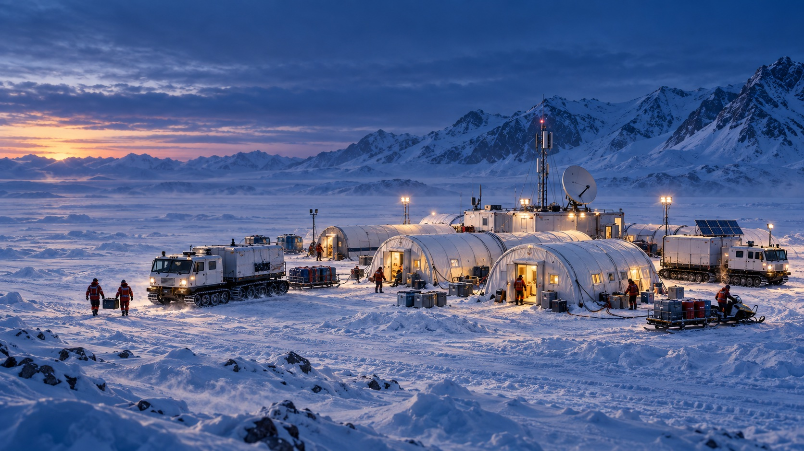
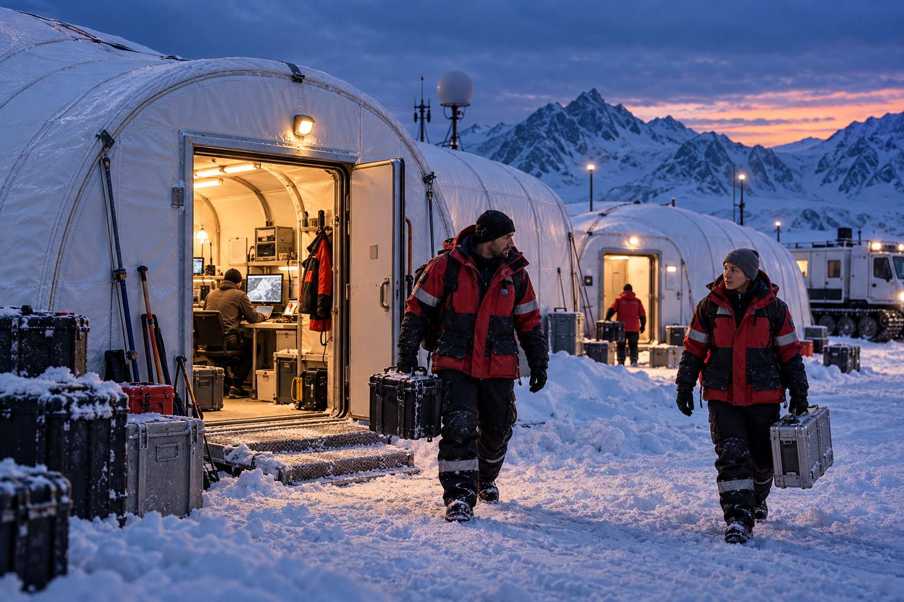
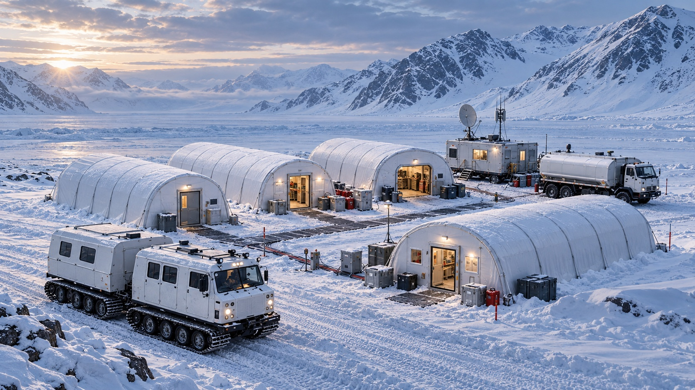
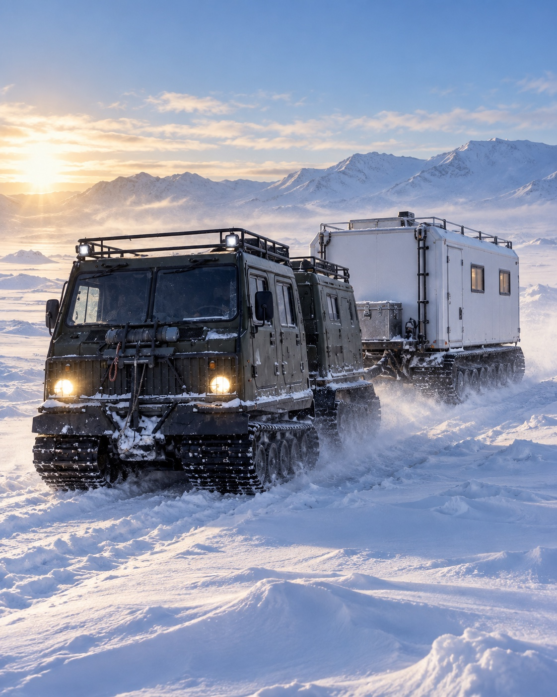
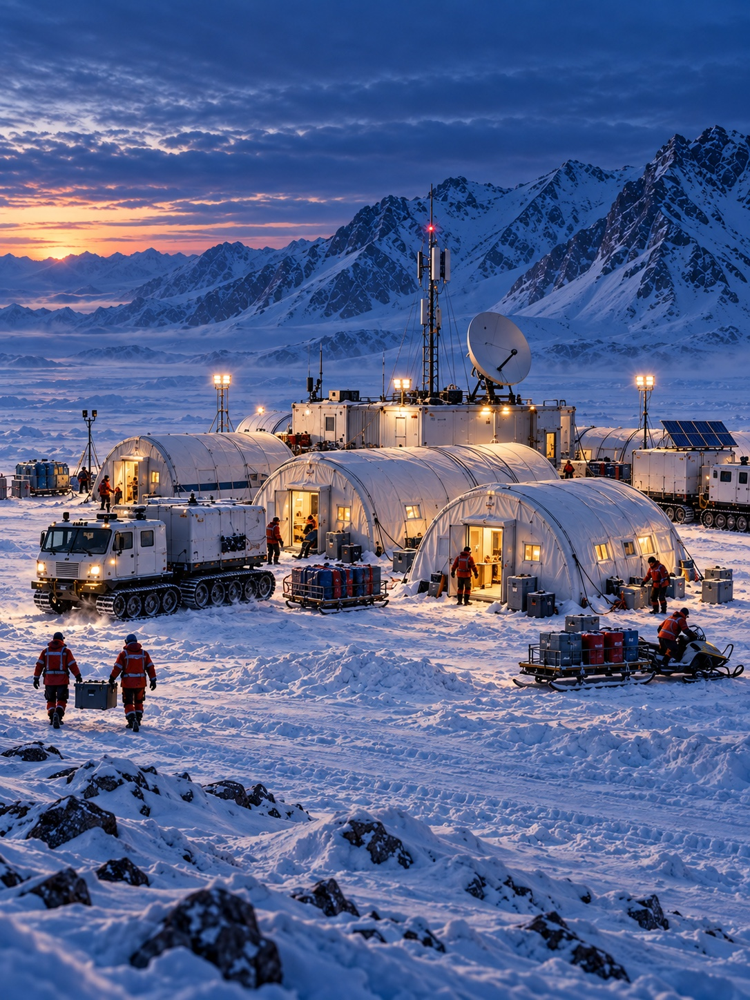

Основы государственной политики Российской Федерации в Арктике на период до 2035 года
Чем может помочь МВОППрисутствие государства на удалённых территориях, где нет постоянных объектов.

Проект для Арктической зоны Российской Федерации
Сеть опорных пунктов, которые приезжают туда, где нет дорог, аэродромов и постоянной застройки.
МВОП — многофункциональный мобильный вездеходный опорный пункт. Вездеходы и быстровозводимые модули дают людям жильё, энергию, связь, ремонт и снабжение вдали от большой земли. Когда меняется задача или проседает мерзлота, пункт переезжает.
Концептуальная визуализация. Не фотография реализованного объекта и не техническая схема.

01 / Проблема
Государство развивает Северный морской путь и опорные населённые пункты Арктики. Но вдоль трассы СМП почти нет береговой инфраструктуры, аэродромной сети нужна модернизация, а десятки посёлков в межсезонье отрезаны от большой земли. Вечная мерзлота деградирует и разрушает стационарные объекты быстрее, чем их успевают восстановить.
02 / Решение
МВОП — многофункциональный мобильный вездеходный опорный пункт
МВОП собирают из гусеничных вездеходов и пневмокаркасных модулей. Вездеходы привозят людей, топливо, оборудование и сами модули. На месте модули становятся жилым городком с кухней, мастерской, энергоцентром и связью. Когда задача меняется или грунт начинает проседать, пункт сворачивают и перевозят.
Вместо дорогого капитального строительства на мерзлоте — инфраструктура, которая приспосабливается к меняющемуся климату.
03 / Устройство
Нажмите на метки на визуализации. Ниже — полный состав модулей и машин по технической версии проекта 4.1.

Модуль весит 160–300 кг. Его перевозит вездеход, кран на площадке не нужен.
5–6 машин на одной платформе. Заднее звено меняется под задачу.
Вместе с пунктомТопливное хранилище · вертолётная площадка · запасные модули на замену
Состав взят из технической версии проекта 4.1. Сроки развёртывания, автономность и стоимость в документах проекта расходятся, поэтому на сайте этих цифр пока нет.
Что сделать: сверить состав и расчёты с замечаниями инженера по арктическому строительству и утвердить цифры для публикации.
Концептуальная визуализация · не фотография готового решения
04 / Платформа
Это двухзвенный гусеничный вездеход-амфибия. В переднем звене едут люди, заднее принимает груз, цистерну, медицинский или научный модуль. Весь парк пункта собран на одной платформе, поэтому ему нужен один склад запчастей и одна подготовка механиков.
05 / Актуальность
Проект предлагает встроиться в стратегии, программы и поручения, которые уже действуют.
Чем может помочь МВОППрисутствие государства на удалённых территориях, где нет постоянных объектов.
Чем может помочь МВОПГражданская инфраструктура, которую при необходимости можно использовать для задач безопасности.
Чем может помочь МВОПТранспортная доступность отдалённых территорий без строительства дорог и аэродромов.
Чем может помочь МВОППоисково-спасательные, метеорологические и логистические пункты вдоль трассы.
Чем может помочь МВОПСтратегия концентрирует ресурсы на опорных населённых пунктах. МВОП доводит их услуги до посёлков и объектов в округе.
Чем может помочь МВОПТикси-Найба, Нарьян-Мар, Норильск-Дудинка, Диксон и другие. МВОП связывает агломерацию с месторождениями и посёлками вокруг.
Чем может помочь МВОПМобильная медицина, транспорт и связь для таких мероприятий в округе опорных пунктов.
Чем может помочь МВОПБереговые базы и аварийное реагирование на наземных участках коридора.
06 / Арктическая повестка
Один и тот же комплекс меняет назначение вместе с набором модулей и оснащением машин.
Цепочка пунктов вдоль трассы: поиск и спасение, метеонаблюдения, логистика для судов и береговых объектов.
Мастер-планы развивают сами города. МВОП доводит медицину, транспорт и сервис до посёлков, месторождений и стойбищ в их округе.
Оперативная база для поиска и спасения, ликвидации аварий и эвакуации людей.
Пункт, созданный для гражданских задач, может стать мобильным командным пунктом, базой снабжения или пограничной заставой. Отдельное строительство для этого не нужно.
Мобильная лаборатория, мониторинг мерзлоты и загрязнений там, где нет стационарной станции.
Технику и модули для сети пунктов проект предлагает производить на российских предприятиях.
07 / Национальные проекты
По поручениям Президента мероприятия по развитию опорных населённых пунктов Арктики включаются в разделы национальных проектов. Модули МВОП меняются под задачу, поэтому один пункт может совмещать несколько специализаций.
Что даёт МВОП
Мобильный фельдшерско-акушерский пункт, первая помощь и эвакуация из отдалённых посёлков.
Выездные услуги и культурные события для жителей отдалённых посёлков и коренных малочисленных народов Севера.
Мобильный класс и дистанционное обучение.
Мониторинг мерзлоты и загрязнений, реагирование на разливы.
Круглогодичная «последняя миля» к посёлкам и объектам без строительства дорог.
Узел связи и передачи данных для удалённой территории.
Площадка для испытаний российских беспилотников и подготовки операторов.
Экологический туризм без стационарных гостиниц.
08 / Для кого
Тот же комплекс решает задачи компаний, которые работают вдали от дорог и не хотят строить постоянную базу ради временных работ.
Глубинная Арктика: долгосрочный мониторинг, научные исследования, аварийно-спасательный резерв.
Прибрежная зона: сезонные работы, логистический хаб, обслуживание удалённых объектов.
Поддержка геологоразведки, строительства и экспедиций.
Оператор МВОП отвечает за технику, модули, энергосистему, запчасти, обучение экипажа и дистанционный мониторинг. У заказчика один контрагент.
Не выбран формат для компаний: покупка комплекса с сервисным договором или аренда с экипажем.
Что сделать: решить, какую модель проект предлагает публично, и описать её условия.09 / Статус
Сейчас есть проработанная концепция и проектные документы. Готового комплекса и утверждённого пилота пока нет.
В них разобраны проблема, устройство опорного пункта, его место в государственных программах и подход к пилоту.
База мобильная, модульная и собирается под конкретную задачу.
Состав комплекса и расчёты сверяются с замечаниями специалиста по арктическому строительству.
Пока не выбраны площадка, первая задача, состав комплекса и критерии успешного пилота.
10 / Официальный диалог
Здесь собрана короткая и проверяемая хронология. Сами письма, подписи, реквизиты и персональные данные на сайт не выносятся.
Материалы проекта направили в Министерство Российской Федерации по развитию Дальнего Востока и Арктики.
Регионы ответили по-разному: где-то отметили возможное применение, где-то — готовность продолжить разговор. Это ещё не означает поддержку или запуск проекта.
Республика Саха (Якутия) сообщила о готовности продолжить разговор о возможных формах и условиях взаимодействия.
Что сделать: проверить формулировку по каждому региону и ведомству и согласовать, кого можно называть публично.
12 / Журнал проекта
В журнале будут появляться подтверждённые новости: выступления, новые документы, экспертные заключения и шаги к пилоту.
Открыть весь журнал ↗
Концептуальная визуализация · не фотография готового объекта
13 / Следующий шаг
Расскажите, где и для какой задачи нужен опорный пункт. Регион, ведомство или компания — на этой основе обсудим состав пункта и условия пилота.
Что сделать: определить получателя заявок, подключить защищённую отправку и подготовить политику обработки данных.